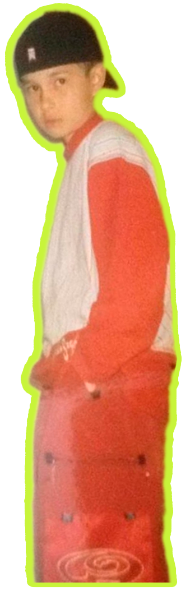
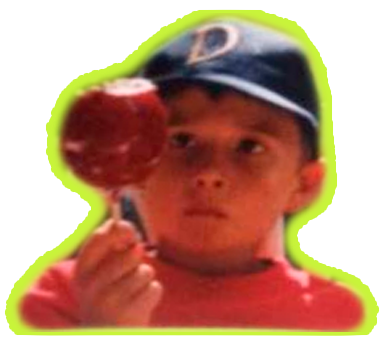
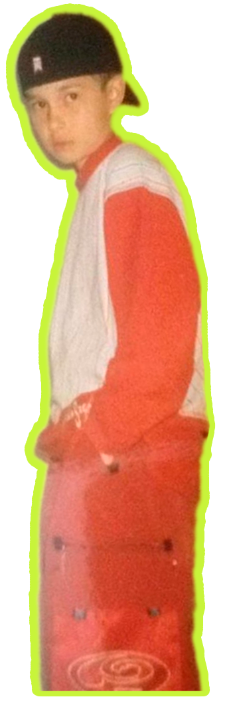
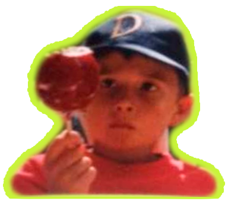

OBLADAET


А чё, внатуре обладает?
Псевдоним Назара появился благодаря телесериалу «Спец», где в одном из эпизодов был диалог про карточного шулера с уникальными способностями. Один другого спрашивал: «А че, в натуре обладает?» Исполнителю почему-то так запомнился этот диалог и оборот «обладает» в этом значении,что, когда он записал свой первый трек, подписался именно так
 



Назар с детства был вовлечен в спорт. В 12-летнем возрасте зачислился в спортивную школу по теннису, параллельно зарабатывая на этом свои первые деньги, а также играл хоккей с мячом и футбол С 2013 года OBLA успешно учавствовал в баттлах, а годом позже выпустил ремикс на трек “0 to 100”, который принёс ему первую популярность